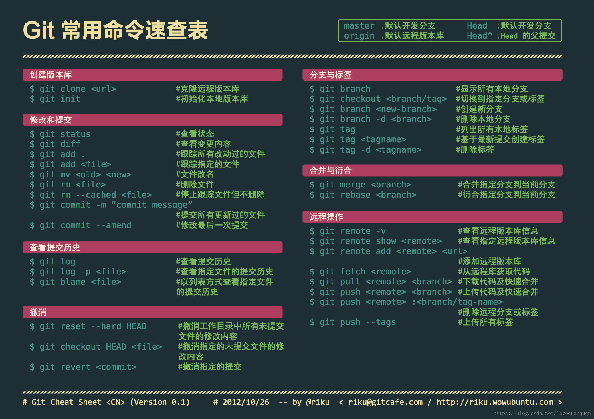

Git 实用命令记录

Git作为具备技术卓越性、社区共建性与生态扩展性的著名的代码仓库管理工具，是全球开发者协作的“基础设施”，本文记录一些工作中常用的Git指令。
常用基础命令速查：

1. 提交
1.1. Git Message Type
- feat – 引入新功能
- fix – 修复错误
- chore – 与修复错误或引入新功能无关，且不修改 src 或测试文件（e.g. 更新依赖项）
- refactor – 重构的代码既不修复错误也不添加功能
- docs – 文档更新，例如自述文件或其他 Markdown 文件
- style – 不影响代码含义的更改，可能与代码格式有关，例如空格、缺少分号等。
- test – 包括新的或纠正以前的测试
- perf – 性能改进
- ci – 持续集成相关
- build – 影响构建系统或外部依赖项的更改
- revert – 恢复之前的提交
1.2. amend 修复上次提交的操作
1 | git add ${changeFiles} # s1. 将修复错误的文件添加到提交 |
1.3. 统计代码提交行数
1 | git log --author="user" --since==2000-01.01 --pretty=tformat: --numstat | gawk '{ add += $1 ; subs += $2 ; loc += $1 - $2 } END { printf "added lines: %s removed lines : %s total lines: %s\n",add,subs,loc }' |
1.4. 修改 commit author or 提交时间
1 | 更改时间 |
2. 工作区
2.1. 取消对某个文件的跟踪(.gitignore)
PS: 解决 .gitignore 文件对已跟踪的文件失效问题
1 | 列出需要取消跟踪的文件（未执行，检查） |
2.2. 取消对某个文件的跟踪(update-index方式)
eg. 个人定制 IDE 或者 Build 工具的配置文件
1 | Git 忽略本地对这个文件的所有修改 |
2.3. 丢弃文件修改（恢复文件）
1 | git checkout HEAD -- file_path |
2.4. 取消对某个文件的跟踪
PS: 解决 .gitignore 文件对已跟踪的文件失效问题
1 | 列出需要取消跟踪的文件（未执行，检查） |
3. submodule
3.1. 克隆子模块（默认不会在 clone 时下载） 子库
submodule代码默认不会在 clone 主分支时下载
1 | 简约 |
3.2. 删除 submodule 子仓库
1 | 删除子模块目录及源码 |
4. 暂存区
4.1. 恢复单个文件到最新提交（撤销变更）
1 | 恢复单个文件到最新提交（撤销变更） |
4.2. 取消暂存文件（git add 的逆向，可选保留文件更改）
1 | 取消暂存区文件 （保留更改，git add 逆操作） |
5. 缓存区
5.1. stash 缓存
stash 只会操作被git追踪的文件
- 使用场景：当在一个分支的开发工作未完成，却又要切换到另外一个分支进行开发的时候，可以先将自己写好的代码，储存到 git 栈，进行另外一个分支的代码开发。
- 功能：保存当前的工作区与暂存区的状态，把当前的修改的保存到git 栈，等以后需要的时候再恢复
1 | 将没有提交的内容缓存并移除 |
6. 本地仓库
6.1. Cherry pick
常用用法：
1 | git cherry-pick [Option] <commit-id> |
附加参数：
-e，--edit。打开外部编辑器，编辑提交信息。-n，--no-commit。只更新工作区和暂存区，不产生新的提交。-x。在提交信息的末尾追加一行 (cherry picked from commit …)，方便以后查到这个提交是如何产生的。-s，--signoff。在提交信息的末尾追加一行操作者的签名，表示是谁进行了这个操作。-m parent-number，--mainline parent-number。如果原始提交是一个合并节点，来自于两个分支的合并，那么 Cherry pick 默认将失败，因为它不知道应该采用哪个分支的代码变动。-m 配置项告诉 Git，应该采用哪个分支的变动。它的参数 parent-number 是一个从 1 开始的整数，代表原始提交的父分支编号。
若发生 Cherry-pick 冲突：
若能成功解决冲突，则继续 cherry-pick 过程。
1
2git add <成功处理后的冲突文件>
git cherry-pick --continue若未能成功解决冲突，可终止 cherry-pick 过程。
1
2
3
4
5终止 cherry-pick 过程，且恢复到操作之前的状态
git cherry-pick --abort
注：quit 虽能退出 Cherry pick ，但不能恢复到操作之前的状态。
git cherry-pick --quit
6.2. 分支重命名
1 | git branch -m ${原分支名} ${新分支名} |
6.3. reset 回滚
reset 参数说明：
- –hard：重置时清空工作目录的所有改动
- –soft：重置时保留工作目录和暂存区的内容；
- –mixed（默认）：重置时保留工作目录的内容，并清空暂存区。
1
2
3
4git reset --hard HEAD^ # 方式 1：回滚到上一次提交
git reset --hard ${commitID} # 方式 2：回滚到指定 commit 处，丢弃其后所有 commit
git reflog # 方式 3：撤销历史操作（如撤销上一次回滚操作）
git reset --hard ${历史操作 ID}
6.4. rebase 变基
前置条件：dev 分支拉取自 master（eg.dev 分支拉取时间：20210715），且在之后（eg.20210720）master 又有新提交（或合入），且现在（eg.20210730）dev 分支需要在引入该新提交（或合入）后再开发。
变基操作成功执行后，dev 分支相当于是从变基操作时（eg.20210730）新拉取的分支，且 (20210715 ~ 20210730) 之间的提交和修改仍保留。
1 | git checkout dev # s1. 切换到待变基分支 dev |
6.5. rebase 修改完善之前某次提交的操作步骤
1 | s1. 触发 git 修改弹窗，将对应 commit 标记为 edit。 |
6.6. rebase 撤销过往提交命令的两种方式
1. 方式 1——触发 git 修改并在弹出 git 编辑界面中删除想撤销的 commits
实现原理：在触发的 git 编辑界面中添加 drop ${待删除 commitID}
1 | s1. 触发 rebase 编辑界面 |
2. 方式 2——将修正应用到当前最新的 commit
实现原理：对本地当前分支，将左开右闭区间 (commitID_B, commitID_C] 的提交覆盖到 commitID_A 之后。相当于原左开右闭区间 (commitID_A, commitID_B] 的提交被删除了。
示例代码：
当前分支提交记录顺序为：commitID_A, … , commitID_B , … , commitID_C。现要删除左开右闭区间 (commitID_A, commitID_B] 的提交：
1 | s1. 触发 rebase |
6.7. 本地分支关联到远程分支
1 | 方式 1 |
6.8. 恢复某条远程分支，在 single-branch 后
1 | RESTORE_BRANCH_NAME='dev-test' |
6.9. 根据操作历史回退
根据 git 操作历史记录回退，eg. 撤销上一步 git reset –hard 操作，以恢复到执行该操作前的状态（需确保 git 全局配置中 core.logallrefupdates 已打开 true）
1 | s1. 查询 git 操作命令历史记录对应的${上一步操作 ID} |
7. 远程仓库
7.1. 在远端仓库新建一个分支
实现方式：本地建分支后同步到远端仓库
1 | git checkout -b newBranch origin/master |
7.2. 删除远程分支
1 | git push origin --delete <branch> |
7.3. 强制用本地分支覆盖远程分支
需远程分支无分支保护
1 | git push -f --set-upstream origin dev-test:dev-test |
7.4. 为远程 repo 某 commit 添加一个 TAG
1 | 添加一个 Tag |
8. 实用工作指令
8.1. 重编 Git
解决拉取代码网络超时问题，log 如下：
- gnutls_handshake() failed
- GnuTLS: The TLS connection was non-properly terminated.
- curl 56 GnuTLS recv error (-110): The TLS connection was non-properly terminated
1 | 增加 git 定位信息 （ Unix ） |
8.2. ~/.gitconfig 配置
1 | [user] |
8.3. 机器自动填充repo账户密码
编辑 ~/.netrc 文件
~/.netrc
1 | machine ABC.org |
8.4. 对比
8.4.1. 对比指定文件在本地分支与远端分支的差异
1. 对比指定【单个文件】在【本地分支与远端】分支的差异
可以识别到暂存区中未提交的修改（其他跨分支的比较均无法识别暂存区中未提交的修改）。
前置条件：本地当前分支在远端有相对应分支。
示例代码：
1 | git diff --stat -- src/file1.cpp src/file1.cpp |
–stat 参数作用：显示简要信息（精度到文件），默认 diff 会显示精度到行的差异信息
只需填写需对比的文件路径分别在本地和远端分支各自的地址即可，第一个路径为本地文件地址，第二个路径为远端仓库文件地址（此示例两文件路径相同）
2. 对比指定的多个文件在两分支间的差异
1 | git diff --stat master dev -- file1.md src/file2.java |
8.4.2. 对比俩分支文件差异
1. 对比【本地两分支】差异
比较本地 master 和 dev 分支所有文件的差异
1 | git diff --stat master dev |
2. 对比【本地两分支】差异（限定文件）
只比较关注的指定文件，在本地 master 和 dev 分支的差异
1 | git diff --stat master dev -- filepath1 filepath2 filepath3 |
3. 对比【本地分支与远端分支】差异
比较本地 dev 分支和远端 master 分支所有文件的差异
1 | git diff --stat dev origin/master |
4. 对比【本地分支与远端分支】差异（限定文件）
比较指定文件，在本地 dev 分支和远端 master 分支的差异
1 | git diff --stat dev origin/master -- filepath1 filepath2 filepath3 |
8.4.3. 对比两分支的”commit 差异”
1 | git log --left-right --stat master...dev |
8.5. 补丁
8.5.1. 提取当前 commit 到指定 commit 之前的所有提交
每此 commit 生成一个 *.patch 补丁文件
1 | git format-patch 上一提交 ID |
8.5.2. Git补丁文件的制作、安装与取消
1 | 生成差异文件（补丁） |
8.5.3. 加载patch补丁文件到当前文件夹
1 | 加载一个 patch 补丁修改 |
备注：
patch 片段
1 | --- old/modules/pcitable Mon Sep 27 11:03:56 1999 |
- 如果使用参数 -p0，那就表示从当前目录找一个叫做 old 的文件夹，再在它下面寻找 modules/pcitable 文件来执行 patch 操作。
- 而如果使用参数 -p1，那就表示忽略第一层目录（即不管 old），从当前目录寻找 modules 的文件夹，再在它下面找 pcitable。
8.5.4. 生成补丁、加载补丁、复原补丁
- 生成补丁
1
2
3
4
5
6
7
8
9生成新旧文件的差异文件（补丁）
diff -Naru file_old file_new > differences.patch
diff -Naru dir_old dir_new > differences.patch
生成文件夹差异（过滤不存在文件夹）
diff -ru sonic/ sonic2/ 2>&1 | fgrep -v 'No such file' > ~/replace_Makefile_dep_pkgs.patch
或通过 git 生成差异文件（补丁）
git diff -- filepath > differences.patch - 打补丁
1
2
3
4打补丁到 old 文件
patch -p0 < differences.patch
或通过 git 打补丁
git apply differences.patch - 取消补丁
1
2
3
4
5
6通过 git 撤销补丁
git apply -R differences.patch
patch -RE -p0 < differences.patch
或通过 git 取消补丁
git reset -hard HEAD